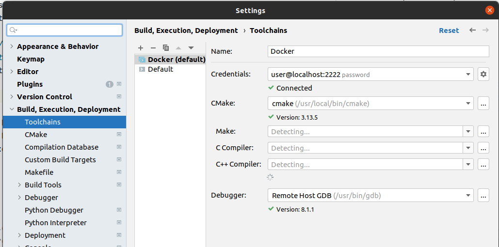

Installing Docker
This will differ on which operating system you have installed, this guide is for linux-based systems. Please take a look at the official Docker Get Docker guide. There is also a guide from ROS called getting started with ROS and Docker. On Ubuntu one should be able to do the following to get docker:
curl -fsSL https://download.docker.com/linux/ubuntu/gpg | sudo gpg --dearmor -o /usr/share/keyrings/docker-archive-keyring.gpg
echo "deb [arch=amd64 signed-by=/usr/share/keyrings/docker-archive-keyring.gpg] https://download.docker.com/linux/ubuntu $(lsb_release -cs) stable" | sudo tee /etc/apt/sources.list.d/docker.list > /dev/null
sudo apt-get update
sudo apt-get install docker-ce docker-ce-cli containerd.io
From there we can install NVIDIA Container Toolkit to allow for the docker to use our GPU and for easy GUI pass through. You might also want to check out this blogpost for some more details.
distribution=$(. /etc/os-release;echo $ID$VERSION_ID) \
&& curl -s -L https://nvidia.github.io/nvidia-docker/gpgkey | sudo apt-key add - \
&& curl -s -L https://nvidia.github.io/nvidia-docker/$distribution/nvidia-docker.list | sudo tee /etc/apt/sources.list.d/nvidia-docker.list
sudo apt-get update
sudo apt-get install -y nvidia-docker2
sudo systemctl restart docker
sudo docker run --rm --gpus all nvidia/cuda:11.0-base nvidia-smi #to verify install
From this point we should be able to "test" that everything is working ok. First on the host machine we need to allow for x11 windows to connect.
We can now run the following command which should open gazebo GUI on your main desktop window.
docker run -it --net=host --gpus all \
--env="NVIDIA_DRIVER_CAPABILITIES=all" \
--env="DISPLAY" \
--env="QT_X11_NO_MITSHM=1" \
--volume="/tmp/.X11-unix:/tmp/.X11-unix:rw" \
osrf/ros:noetic-desktop-full \
bash -it -c "roslaunch gazebo_ros empty_world.launch"
Alternatively we can launch directly into a bash shell and run commands from in there. This basically gives you a terminal in the docker container.
docker run -it --net=host --gpus all \
--env="NVIDIA_DRIVER_CAPABILITIES=all" \
--env="DISPLAY" \
--env="QT_X11_NO_MITSHM=1" \
--volume="/tmp/.X11-unix:/tmp/.X11-unix:rw" \
osrf/ros:noetic-desktop-full \
bash
rviz # you should be able to launch rviz once in bash
Running OpenVINS with Docker
Clone the OpenVINS repository, build the container and then launch it. The Dockerfile will not build the repo by default, thus you will need to build the project. We have a few docker files for each version of ROS and operating system we support. In the following we will use the Dockerfile_ros1_20_04 which is for a ROS1 install with a 20.04 system.
- Use a Workspace Directory Mount
- Here it is important to note that we are going to create a dedicated ROS workspace which will then be loaded into the workspace. Thus if you are going to develop packages alongside OpenVINS you would make sure you have cloned your source code into the same workspace. The workspace local folder will be mounted to
/catkin_ws/ in the docker, thus all changes from the host are mirrored.
mkdir -p ~/workspace/catkin_ws_ov/src
cd ~/workspace/catkin_ws_ov/src
git clone https://github.com/rpng/open_vins.git
cd open_vins
export VERSION=ros1_20_04 # which docker file version you want (ROS1 vs ROS2 and ubuntu version)
docker build -t ov_$VERSION -f Dockerfile_$VERSION .
If the dockerfile breaks, you can remove the image and reinstall using the following:
docker image list
docker image rm ov_ros1_20_04 --force
From here it is a good idea to create a nice helper command which will launch the docker and also pass the GUI to your host machine. Here you can append it to the bottom of the ~/.bashrc so that we always have it on startup or just run the two commands on each restart
- Directory Binding
- You will need to specify absolute directory paths to the workspace and dataset folders on the host you want to bind. Bind mounts are used to ensure that the host directory is directly used and all edits made on the host are sync'ed with the docker container. See the docker bind mounts documentation. You can add and remove mounts from this command as you see the need.
nano ~/.bashrc # add to the bashrc file
xhost + &> /dev/null
export DOCKER_CATKINWS=/home/username/workspace/catkin_ws_ov
export DOCKER_DATASETS=/home/username/datasets
alias ov_docker="docker run -it --net=host --gpus all \
--env=\"NVIDIA_DRIVER_CAPABILITIES=all\" --env=\"DISPLAY\" \
--env=\"QT_X11_NO_MITSHM=1\" --volume=\"/tmp/.X11-unix:/tmp/.X11-unix:rw\" \
--mount type=bind,source=$DOCKER_CATKINWS,target=/catkin_ws \
--mount type=bind,source=$DOCKER_DATASETS,target=/datasets $1"
source ~/.bashrc # after you save and exit
Now we can launch RVIZ and also compile the OpenVINS codebase. From two different terminals on the host machine one can run the following (ROS 1):
ov_docker ov_ros1_20_04 roscore
ov_docker ov_ros1_20_04 rosrun rviz rviz -d /catkin_ws/src/open_vins/ov_msckf/launch/display.rviz
To actually get a bash environment that we can use to build and run things with we can do the following. Note that any install or changes to operating system variables will not persist, thus only edit within your workspace which is linked as a volume.
ov_docker ov_ros1_20_04 bash
Now once inside the docker with the bash shell we can build and launch an example simulation:
cd catkin_ws
catkin build
source devel/setup.bash
rosrun ov_eval plot_trajectories none src/open_vins/ov_data/sim/udel_gore.txt
roslaunch ov_msckf simulation.launch
And a version for ROS 2 we can do the following:
cd catkin_ws
colcon build --event-handlers console_cohesion+
source install/setup.bash
ros2 run ov_eval plot_trajectories none src/open_vins/ov_data/sim/udel_gore.txt
ros2 run ov_msckf run_simulation src/open_vins/config/rpng_sim/estimator_config.yaml
- Real-time Performance
- On my machine running inside of the docker container is not real-time in nature. I am not sure why this is the case if someone knows if something is setup incorrectly please open a github issue. Thus it is recommended to only use the "serial" nodes which allows for the same parameters to be used as when installing directly on an OS.
Using Jetbrains Clion and Docker

Jetbrains provides some instructions on their side and a youtube video. Basically, Clion needs to be configured to use an external compile service and this service needs to be exposed from the docker container. I still recommend users compile with catkin build directly in the docker, but this will allow for debugging and syntax insights.
After building the OpenVINS image (as above) we can do the following which will start a detached process in the docker. This process will allow us to connect Clion to it.
export DOCKER_CATKINWS=/home/username/workspace/catkin_ws_ov # NOTE: should already be set in your bashrc
export DOCKER_DATASETS=/home/username/datasets # NOTE: should already be set in your bashrc
docker run -d --cap-add sys_ptrace -p127.0.0.1:2222:22 \
--mount type=bind,source=$DOCKER_CATKINWS,target=/catkin_ws \
--mount type=bind,source=$DOCKER_DATASETS,target=/datasets \
--name clion_remote_env ov_ros1_20_04
We can now change Clion to use the docker remote:
- In short, you should add a new Toolchain entry in settings under Build, Execution, Deployment as a Remote Host type.
- Click in the Credentials section and fill out the SSH credentials we set-up in the Dockerfile
- Host: localhost
- Port: 2222
- Username: user
- Password: password
- CMake: /usr/local/bin/cmake
- Make sure the found CMake is the custom one installed and not the system one (greater than 3.12)
- Add a CMake profile that uses this toolchain and you’re done.
- Change build target to be this new CMake profile (optionally just edit / delete the default)
To add support for ROS you will need to manually set environmental variables in the CMake profile. These were generated by going into the ROS workspace, building a package, and then looking at printenv output. It should be under Settings > Build,Execution,Deployment > CMake > (your profile) > Environment. This might be a brittle method, but not sure what else to do... (also see this blog post). You will need to edit the ROS version (noetic is used below) to fit whatever docker container you are using.
LD_PATH_LIB=/catkin_ws/devel/lib:/opt/ros/noetic/lib;PYTHON_EXECUTABLE=/usr/bin/python3;PYTHON_INCLUDE_DIR=/usr/include/python3.8;ROS_VERSION=1;CMAKE_PREFIX_PATH=/catkin_ws/devel:/opt/ros/noetic;LD_LIBRARY_PATH=/catkin_ws/devel/lib:/opt/ros/noetic/lib;PATH=/opt/ros/noetic/bin:/usr/local/sbin:/usr/local/bin:/usr/sbin:/usr/bin:/sbin:/bin;PKG_CONFIG_PATH=/catkin_ws/devel/lib/pkgconfig:/opt/ros/noetic/lib/pkgconfig;PYTHONPATH=/opt/ros/noetic/lib/python3/dist-packages;ROSLISP_PACKAGE_DIRECTORIES=/catkin_ws/devel/share/common-lisp;ROS_PACKAGE_PATH=/catkin_ws/src/open_vins/ov_core:/catkin_ws/src/open_vins/ov_data:/catkin_ws/src/open_vins/ov_eval:/catkin_ws/src/open_vins/ov_msckf:/opt/ros/noetic/share
When you build in Clion you should see in docker stats that the clion_remote_env is building the files and maxing out the CPU during this process. Clion should send the source files to the remote server and then on build should build and run it remotely within the docker container. A user might also want to edit Build,Execution,Deployment > Deployment settings to exclude certain folders from copying over. See this jetbrains documentation page for more details.